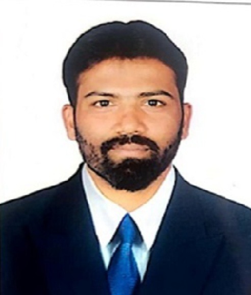

(Affiliated to Karnataka State Law University, Recognized by Govt. of Karnataka, Approved by Bar Council of India)
Rashtrakavi Kuvempu College of Law
Dedicated legal scholars, experienced advocates, and administrative support driving legal education forward.

5 Yrs Teaching + 5 Yrs Legal Practice
principal@kuvempulawcollege.co.in
Mob: 9886129222
10 Years Teaching Experience
munirajulc@gmail.com
+91 98864 35787 / 99864 12178
5 Years Teaching Experience
sunilmvmc@gmail.com
+91 96861 40617
Fresher / <1 Year Experience
dawoodbaig.k@gmail.com
+91 96328 00538
~7 Years Professional Legal Practice
geethahd26@gmail.com
+91 81975 25759
10+ Years Library Management
narayanaswamybv@gmail.com
8 Years Athletic Administration
shivakumarpe@gmail.com
Academic Registry & Documentation
lakshmidevi.rklc@gmail.com
Institutional Accounts & Records
chandru.rklc@gmail.com